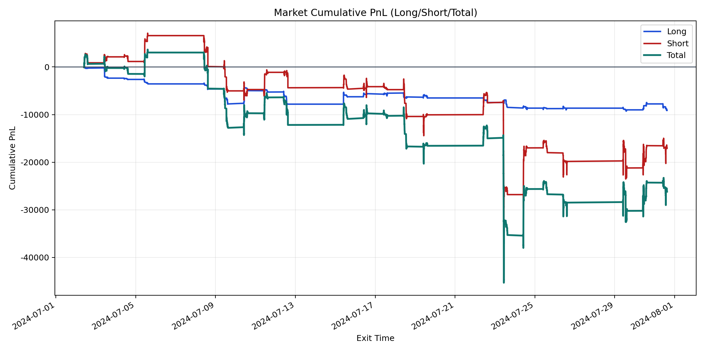
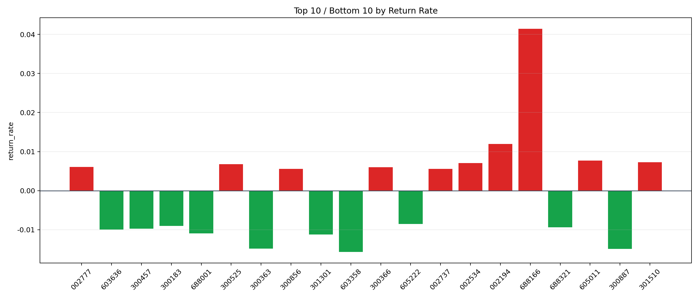

| repo_root | /home/haoranyou/data/output/alpha0.4_1w_5s_3ticks_index_filter/index_weights_1000 |
|---|---|
| period_months | 1 |
| period_label | 2024-07-02_to_2024-07-31 |
| start_time | 2024-07-02 09:52:22 |
| end_time | 2024-07-31 14:59:55 |
| n_trades | 8765 |
| n_symbols | 315 |
| total_pnl | -26206.773499999916 |
| long_total_pnl | -9109.501649999975 |
| short_total_pnl | -17097.271849999943 |
| total_entry_notional | 80210679.0 |
| long_entry_notional | 14391173.0 |
| short_entry_notional | 65819506.0 |
| total_return_rate | -0.0003267242445360663 |
| long_return_rate | -0.000632992296736338 |
| short_return_rate | -0.0002597599539868917 |
| top_symbols_by_return | ["688166", "002194", "605011", "301510", "002534", "300525", "002777", "300366", "002737", "300856"] |
| bottom_symbols_by_return | ["603358", "300887", "300363", "301301", "688001", "603636", "300457", "688321", "300183", "605222"] |

